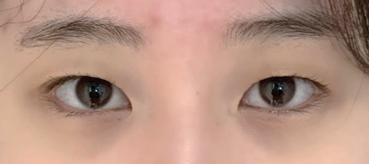
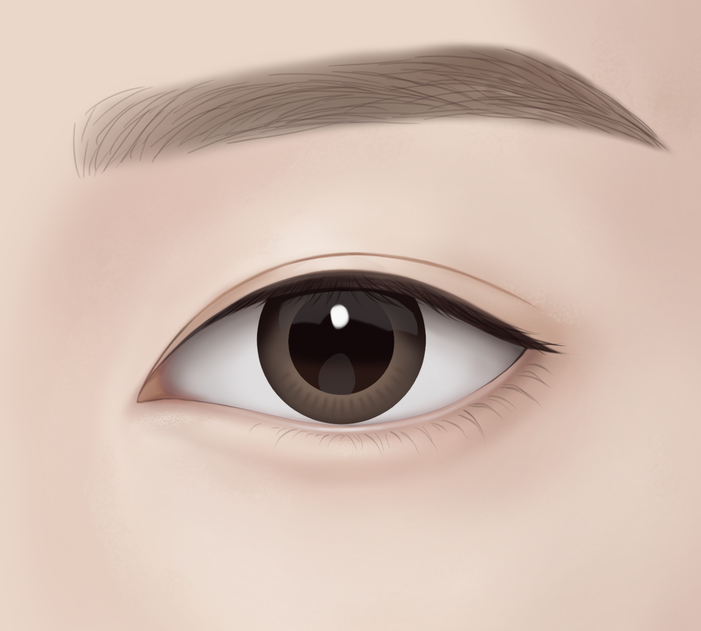
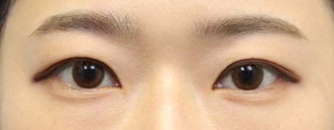
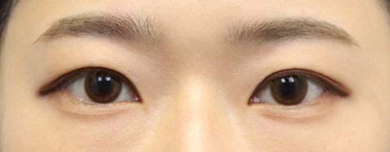

수술 당일에도
자연스러운
쌍커풀을 원한다면
AMOND
순간유착
단 몇 분의 짧은 수술 시간
3~4일 내외의 짧은 회복기간
당일에도 자연스러운 라인
순간유착이란 단 두세 번의 톡톡 터치로 진행하는 쌍꺼풀 수술법으로, 간단할 것 같지만
오로지 아몬드성형외과 원장님의 노하우에서 탄생한 아몬드성형외과만의 독자적인 1:1 맞춤형 수술법입니다.
-
수술시간
5분 내외
-
마취방법
수면/국소
-
실밥제거
없음
-
회복기간
큰 부기 3~4일
-
흉터
없음
수술 직후 당일에도 당당한
아몬드 순간유착
-
수술전
당일


-
수술전
당일


-
수술전
당일


-
수술전
당일


-
수술전
당일

-
수술전
당일


<< 좌우로 스크롤을 움직여 확인해보세요. >>
순간유착이 필요한 경우
-
01.
쌍커풀이 생겼다 없어졌다 하시는 분
-
02.
짝눈이신 분
-
03.
절개쌍커풀이 부담스러우신 분
-
04.
5분 내 쌍꺼풀 수술을 받고 싶으신 분
-
05.
회복기간이 짧은 쌍꺼풀 수술을 원하시는 분
아몬드 순간유착
Check Point- Point 01
- Point 02
- Point 03
-
환자 개개인의 눈 컨디션이 중요
순간유착은 수술을 진행할 수 있는 최적화된 눈의 조건이 존재하기 때문에 환자 개개인의 눈 컨디션이 굉장히 중요합니다. 따라서, 상담 시 환자의 눈두덩이 지방 정도, 피부의 두께, 살성 정도 등을 꼼꼼하게 파악한 후 수술 가능 여부를 종합적으로 진단해야 합니다.
-
얼굴과 쌍꺼풀 라인의 조화를 고려
환자마다 가지고 있는 얼굴과 이목구비가 다 다르기 때문에 눈매와 라인 역시 다 다릅니다. 쌍꺼풀은 얼굴과의 조화가 무엇보다 중요하기 때문에 환자의 얼굴에 맞는 조화로운 쌍꺼풀 라인을 분석해야 합니다.
-
필요시 다른 수술과 함께 병행
환자들이 원하는 이상적인 눈매를 위한 최상의 밸런스를 구현해내기 위해서는 환자 개개인의 눈 컨디션에 따라 필요시 순간유착과 함께 눈매교정이나 트임 등 다른 수술을 병행할 수 있습니다.
아몬드 순간유착으로 구현 가능한
다양한 쌍꺼풀 라인!
-

인라인
-

인라웃라인
-

세미아웃라인
-

아웃라인
이미지 위에 마우스를 올려 자세하게 확인해보세요
순간유착 수술방법
아몬드성형외과 원장님의 특화된 수술 방법!
-

각각의 눈매에 어울리는 라인을 디자인
-

디자인한 쌍꺼풀 라인을 따라
2-3개의 구멍을 바늘로 뚫음 -

구멍을 통해 피ㅏ부 안팎으로
실을 통과시켜 쌍꺼풀을 만듦 -

쌍꺼풀 라인 완성
 

A MOMENT OF NEW DAY